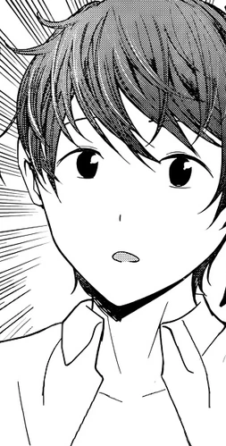

Tsubasa Tanuma (田沼たぬま 翼つばさ, Tanuma Tsubasa) is a supporting character in the Kaguya-sama wa Kokurasetai series. He is a third-year high school student at Shuchi'in Academy, a member of the Volunteering Club, and the boyfriend of Nagisa Kashiwagi.
| Tsubasa Tanuma | |
|---|---|
| Manga | Anime |
|  | |
| Profile | |
| Age | 18 |
| Birthday | 25 August |
| Gender | Male |
| Eye Color | DarkBlue |
| Hair Color | Golden Brown |
| Height | 158 cm |
| Personal Status | |
| Occupation | High School Student |
| Grade | Junior (2-B) |
| Portrayal | |
| Japanese VA | Taku Yashiro |
| English VA | Brandon McInnis |
| Debut | |
| Manga | Chapter 6 |
| Anime | Episode 2 |
In Tsubasa's debut appearance, he has a straight black short hair and in essence looks bland.
After the summer break, he changed his hairstyle and dyed his hair grey (brown in the anime). He also wears ear piercings to look like a bad boy stereotype (because Nagisa Kashiwagi once mentioned that she likes that look).
Tsubasa is a nice and easygoing guy who never gets angry despite being openly badmouthed and is a really kind person. This personality of his is what made Maki Shijo fall for him. As the story progresses, he shows his ”unrestrained” side, going as far as to make out with Nagisa Kashiwagi in public (even in front of the student council). He's also prone to boasting about his relationship, as seen several times when he visits the Student Council under the pretext of seeking advice but seemingly having no actual problems with Nagisa at the time.
Tsubasa debuts as a classmate who asks for love advice from Miyuki Shirogane at the student council room. In his first appearance, he asks on how to confess and ask Nagisa Kashiwagi out. His next love advice is about him wanting to hold his girlfriend's hand and so he then confessed to Nagisa and both were in the Volunteering Club together. After the summer break he meets with Miyuki to brag about his relationship. Next he asks to help figure out Nagisa's reason to be angry. In his 6 month relationship anniversary, he asks for help from Maki to get a gift for Nagisa.
The name Tsubasa means "wing" (翼). Tsubasa's surname Tanuma means "field, rice paddy" (田) (ta) and "swamp, pond, bog" (沼) (numa).